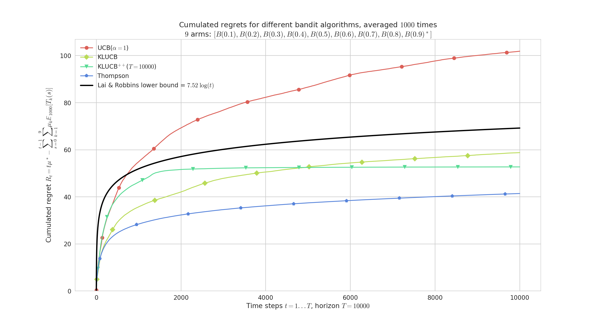
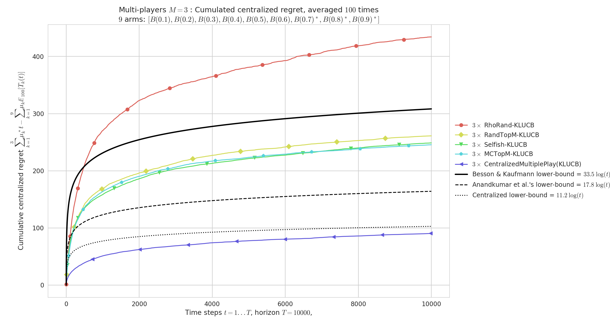

title: “SMPyBandits“ subtitle: “a Research Framework for Single and Multi-Players Multi-Arms Bandits Algorithms in Python” title-meta: “SMPyBandits: an Open-Source Research Framework for Single and Multi-Players Multi-Arms Bandits Algorithms in Python” author-meta: Lilian Besson author:
- name: Lilian Besson orcid: 0000-0003-2767-2563 thanks: Thanks to Emilie Kaufmann and Christophe Moy for their review and support. affiliation: PhD Student at CentraleSupélec, campus of Rennes, SCEE team & Inria Lille Nord Europe, SequeL team. email: Lilian.Besson[AT]CentraleSupelec[.]fr tags:
- sequential learning
- multi-arm bandits
- multi-player multi-arm bandits
- aggregation of sequential learning algorithms
- learning theory date: 22 February 2018 lang: en-US babel-lang: english bibliography: paper.bib biblio-style: alpha link-citations: true colorlinks: true numbersections: yes section-titles: yes usehancyhdr: yes fontsize: 11pt geometry: scale=0.72 fontfamily: palatino abstract: I present the open-source numerical environment SMPyBandits, written in Python and designed to be an easy to use framework for experimenting with single- and multi-player algorithms and in different variations of the multi-armed bandits problem. thanks: Thanks to Emilie Kaufmann and Christophe Moy.
Summary¶
This article presents my numerical environment SMPyBandits, written in Python (2 or 3) [@python], for numerical simulations on single-player and multi-players Multi-Armed Bandits (MAB) algorithms [@Bubeck12].
SMPyBandits is the most complete open-source implementation of state-of-the-art algorithms tackling various kinds of sequential learning problems referred to as Multi-Armed Bandits. It aims at being extensive, simple to use and maintain, with a clean and perfectly documented codebase. But most of all it allows fast prototyping of simulations and experiments, with an easy configuration system and command-line options to customize experiments while starting them (see below for an example).
SMPyBandits does not aim at being blazing fast or perfectly memory efficient, and comes with a pure Python implementation with no dependency except standard open-source Python packages.
Even if some critical parts are also available as a C Python extension, and even by using Numba [@numba] whenever it is possible, if simulation speed really matters, one should rather refer to less exhaustive but faster implementations, like for example [@TorLibbandit] in C++ or [@VishMABjl] in Julia.
Presentation¶
Single-Player MAB¶
Multi-Armed Bandit (MAB) problems are well-studied sequential decision making problems in which an agent repeatedly chooses an action (the “arm” of a one-armed bandit) in order to maximize some total reward [@Robbins52,LaiRobbins85]. Initial motivation for their study came from the modeling of clinical trials, as early as 1933 with the seminal work of Thompson [@Thompson33]. In this example, arms correspond to different treatments with unknown, random effect. Since then, MAB models have been proved useful for many more applications, that range from cognitive radio [@Jouini09] to online content optimization (news article recommendation [@Li10], online advertising [@LiChapelle11] or A/B Testing [@Kaufmann14;Jamieson17]), or portfolio optimization [@Sani12].
This Python package is the most complete open-source implementation of single-player (classical) bandit algorithms (over 65!).
We use a well-designed hierarchical structure and class inheritance scheme to minimize redundancy in the codebase, and for instance the code specific to the UCB algorithm [@LaiRobbins85;@Auer02] is as short as this (and fully documented), by inheriting from the IndexPolicy class:
from numpy import sqrt, log
from .IndexPolicy import IndexPolicy
class UCB(IndexPolicy):
""" The UCB policy for bounded bandits.
Reference: [Lai & Robbins, 1985]. """
def computeIndex(self, arm):
r""" Compute the current index, at time t and
after :math:`N_k(t)` pulls of arm k:
.. math::
I_k(t) = \frac{X_k(t)}{N_k(t)}
+ \sqrt{\frac{2 \log(t)}{N_k(t)}}.
"""
if self.pulls[arm] < 1: # forced exploration
return float('+inf') # in the first steps
else: # or compute UCB index
estimated_mean = (self.rewards[arm] / self.pulls[arm])
exploration_bias = sqrt((2 * log(self.t)) / self.pulls[arm])
return estimated_mean + exploration_bias
Multi-Players MAB¶
For Cognitive Radio applications, a well-studied extension is to consider $M\geq2$ players, interacting on the same $K$ arms. Whenever two or more players select the same arm at the same time, they all suffer from a collision. Different collision models has been proposed, and the simplest one consist in giving a $0$ reward to each colliding players. Without any centralized supervision or coordination between players, they must learn to access the $M$ best resources (i.e., arms with highest means) without collisions.
This package implements all the collision models found in the literature, as well as all the algorithms from the last 10 years or so (including rhoRand from 2009, MEGA from 2015, MusicalChair from 2016, and our state-of-the-art algorithms RandTopM and MCTopM) from [@BessonALT2018].
Purpose¶
The main goal of this package is to implement with the same API most of the existing single- and multi-player multi-armed bandit algorithms. Each algorithm comes with a clean documentation page, containing a reference to the research article(s) that introduced it, and with remarks on its numerical efficiency.
It is neither the first nor the only open-source implementation of multi-armed bandits algorithms, although one can notice the absence of any well-maintained reference implementation. I built SMPyBandits from a framework called pymaBandits [@pymaBandits], which implemented a few algorithms and three kinds of arms, in both Python and MATLAB. The goal was twofolds, first to implement as many algorithms as possible to have a complete implementation of the current state of research in MAB, and second to implement multi-players simulations with different models.
Since November $2016$, I follow actively the latest publications related to Multi-Armed Bandits (MAB) research, and usually I implement quickly any new algorithms. For instance, Exp3++, CORRAL and SparseUCB were each introduced by articles (for Exp3++, for CORRAL, for SparseUCB) presented at COLT in July 2017, LearnExp comes from a NIPS 2017 paper, and kl-UCB++ from an ALT 2017 paper.
Features¶
With this numerical framework, simulations can run on a single CPU or a multi-core machine using joblib [@joblib], and summary plots are automatically saved as high-quality PNG, PDF and EPS (ready for being used in research article), using matplotlib [@matplotlib] and seaborn [@seaborn]. Making new simulations is very easy, one only needs to write a configuration script and no knowledge of the internal code architecture.
Examples of configuration for some simulations¶
A small script configuration.py is used to import the arm classes, the policy classes and define the problems and the experiments.
For instance, we can compare the standard anytime klUCB algorithm against the non-anytime variant klUCBPlusPlus algorithm, as well as UCB (with $\alpha=1$) and Thompson (with Beta posterior).
See below in Figure \ref{fig:plot1} for the result showing the average regret for these $4$ algorithms.
from Arms import *; from Policies import *
configuration = {
"horizon": 10000, # Finite horizon of the simulation
"repetitions": 1000, # Number of repetitions
"n_jobs": -1, # Max number of cores for parallelization
# Environment configuration, you can set up more than one.
"environment": [ {
"arm_type": Bernoulli,
"params": [0.1, 0.2, 0.3, 0.4, 0.5, 0.6, 0.7, 0.8, 0.9]
}],
# Policies that should be simulated, and their parameters.
"policies": [
{"archtype": klUCB, "params": {} },
{"archtype": klUCBPlusPlus,
"params": { "horizon": 10000 } },
{"archtype": UCBalpha,
"params": { "alpha": 1 } },
{"archtype": Thompson, "params": {} },
]}
For a second example, this snippet is a minimal example [^confmultiplayers] of configuration for multiplayer simulations, comparing different multi-player algorithms used with the klUCB index policy.
See below in Figure \ref{fig:plot2} for an illustration.
[^confmultiplayers]: See the file configuration_multiplayers.py in the code for more details.
from Arms import *; from Policies import *
from PoliciesMultiPlayers import *
nbPlayers = 3
configuration = {
"horizon": 10000, # Finite horizon of the simulation
"repetitions": 100, # Number of repetitions
"n_jobs": -1, # Max number of cores for parallelization
# Environment configuration, you can set up more than one.
"environment": [ {
"arm_type": Bernoulli,
"params": [0.1, 0.2, 0.3, 0.4, 0.5, 0.6, 0.7, 0.8, 0.9]
} ],
# Policies that should be simulated, and their parameters.
"successive_players": [
CentralizedMultiplePlay(nbPlayers, nbArms, klUCB).children,
RandTopM(nbPlayers, nbArms, klUCB).children,
MCTopM(nbPlayers, nbArms, klUCB).children,
Selfish(nbPlayers, nbArms, klUCB).children,
rhoRand(nbPlayers, nbArms, klUCB).children,
] }
Documentation¶
A complete sphinx [@sphinx] documentation for each algorithms and every piece of code, included the constants in the different configuration files, is available here: https://smpybandits.github.io.
Other noticeable features¶
Single-player Policies¶
- More than 65 algorithms, including all known variants of the
UCB, kl-UCB,MOSSand Thompson Sampling algorithms, as well as other less known algorithms (OCUCB,BESA,OSSBetc). - Implementation of very recent Multi-Armed Bandits algorithms, e.g.,
kl-UCB++,UCB-dagger, orMOSS-anytime(from this COLT 2016 article). - Experimental policies:
BlackBoxOptorUnsupervisedLearning(using Gaussian processes to learn the arms distributions).
Arms and problems¶
- The framework mainly targets stochastic bandits, with arms following
Bernoulli, bounded (truncated) or unboundedGaussian,Exponential,GammaorPoissondistributions. - The default configuration is to use a fixed problem for N repetitions (e.g. 1000 repetitions, use
MAB.MAB), but there is also a perfect support for “Bayesian” problems where the mean vector $\mu_1,\dots,\mu_K$ change at every repetition (seeMAB.DynamicMAB). - There is also a good support for Markovian problems, see
MAB.MarkovianMAB, even though I preferred to not implement policies specifically designed for Markovian problems.
Other remarks¶
- The framework is implemented in an imperative and object oriented style. Algorithm and arms are represented as classes, and the API of the
Arms,PolicyandMultiPlayersPolicyclasses is clearly documented. - The code is clean, and a special care is given to keep it compatible for both Python 2 and Python 3.
- The joblib library [@joblib] is used for the
Evaluatorclasses, so the simulations are easily ran in parallel on multi-core machines and servers [^nogpu].
[^nogpu]: Note that SMPyBandits does no need a GPU and is not optimized to run on a cluster. In particular, it does not take advantage of popular libraries like numexpr, theano or tensorflow.
How to run the experiments ?¶
For example, this short bash snippet [^docforconf] shows how to clone the code, install the requirements for Python 3 (in a virtualenv [@virtualenv]), and starts some simulation for $N=1000$ repetitions of the default non-Bayesian Bernoulli-distributed problem, for $K=9$ arms, an horizon of $T=10000$ and on $4$ CPUs [^speedofsimu].
Using environment variables (N=1000) when launching the simulation is not required but it is convenient.
[^docforconf]: See this page of the documentation for more details. [^speedofsimu]: It takes about $20$ to $40$ minutes for each simulation, on a standard $4$-cores $64$ bits GNU/Linux laptop.
# 1. get the code in /tmp/, or wherever you want
cd /tmp/
git clone https://GitHub.com/SMPyBandits/SMPyBandits.git
cd SMPyBandits.git
# 2. just be sure you have the latest virtualenv from Python 3
sudo pip3 install --upgrade virtualenv
# 3. create and active the virtualenv
virtualenv3 venv || virtualenv venv
. venv/bin/activate
# 4. install the requirements in the virtualenv
pip3 install -r requirements.txt
# 5. run a single-player simulation!
N=1000 T=10000 K=9 N_JOBS=4 make single
# 6. run a multi-player simulation for 3 players!
N=1000 T=10000 M=3 K=9 N_JOBS=4 make moremulti
Examples of illustrations¶
The two simulations above produce these plots showing the average cumulated regret [^regret] for each algorithm, which is the reference measure of efficiency for algorithms in the multi-armed bandits framework.
[^regret]: The regret is the difference between the cumulated rewards of the best fixed-armed strategy (which is the oracle strategy for stationary bandits) and the cumulated rewards of the considered algorithms.
{ width=95% }
{ width=95% }
Research using SMPyBandits¶
SMPyBandits was used for the following research articles since $2017$ [^summaryphd]:
[^summaryphd]: I (Lilian Besson) have started my PhD in October $2016$, and this is a part of my on going research since December $2016$. I launched the documentation on March $2017$, I wrote my first research articles using this framework in $2017$ and I was finally able to open-source my project in February $2018$.
- For this first article, [@Bonnefoi17], SMPyBandits was not used to generate the main figures, but to explore on a smaller scale many other approaches (using
EvaluatorSparseMultiPlayers). - For [@BessonALT2018], we used SMPyBandits for all the simulations for multi-player bandit algorithms [^article1]. We designed the two
RandTopMandMCTopMalgorithms and proved than they enjoy logarithmic regret in the usual setting, and outperform significantly the previous state-of-the-art solutions (i.e.,rhoRand,MEGAandMusicalChair).
[^article1]: More details and illustrations are given on the documentation page, MultiPlayers.
- In [@BessonWCNC2018], we used SMPyBandits to illustrate and compare different aggregation algorithms [^article2]. We designed a variant of the Exp3 algorithm for online aggregation of experts [@Bubeck12], called
Aggregator. Aggregating experts is a well-studied idea in sequential learning and in machine learning in general. We showed that it can be used in practice to select on the run the best bandit algorithm for a certain problem from a fixed pool of experts. This idea and algorithm can have interesting impact for Opportunistic Spectrum Access applications [@Jouini09] that use multi-armed bandits algorithms for sequential learning and network efficiency optimization.
[^article2]: More details and illustrations are given on the documentation page, Aggregation.
- In [@Besson2018c], we used SMPyBandits to illustrate and compare different “doubling trick” schemes [^article3]. In sequential learning, an algorithm is anytime if it does not need to know the horizon $T$ of the experiments. A well-known trick for transforming any non-anytime algorithm to an anytime variant is the “Doubling Trick”: start with an horizon $T_0\in\mathbb{N}$, and when $t > T_i$, use $T_{i+1} = 2 T_i$. We studied two generic sequences of growing horizons (geometric and exponential), and we proved two theorems that generalized previous results. A geometric sequence suffices to minimax regret bounds (in $R_T = \mathcal{O}(\sqrt(T))$), with a constant multiplicative loss $\ell \leq 4$, but cannot be used to conserve a logarithmic regret bound (in $R_T = \mathcal{O}(\log(T))$). And an exponential sequence can be used to conserve logarithmic bounds, with a constant multiplicative loss also $\ell \leq 4$ in the usual setting. It is still an open question to know if a well-tuned exponential sequence can conserve minimax bounds or weak minimax bounds (in $R_T = \mathcal{O}(\sqrt{T \log(T)})$).
[^article3]: More details and illustrations are given on the documentation page, DoublingTrick.
Dependencies¶
The framework is written in Python [@python], using matplotlib [@matplotlib] for 2D plotting, numpy [@numpy] for data storing, random number generations and and operations on arrays, scipy [@scipy] for statistical and special functions, and seaborn [@seaborn] for pretty plotting and colorblind-aware colormaps. Optional dependencies include joblib [@joblib] for parallel simulations, numba [@numba] for automatic speed-up on some small functions, as well as sphinx [@sphinx] for generating the documentations. I also acknowledge the use of virtualenv [@virtualenv] for launching simulations in isolated environments, and jupyter [@jupyter] used with ipython [@ipython] to experiment with the code.